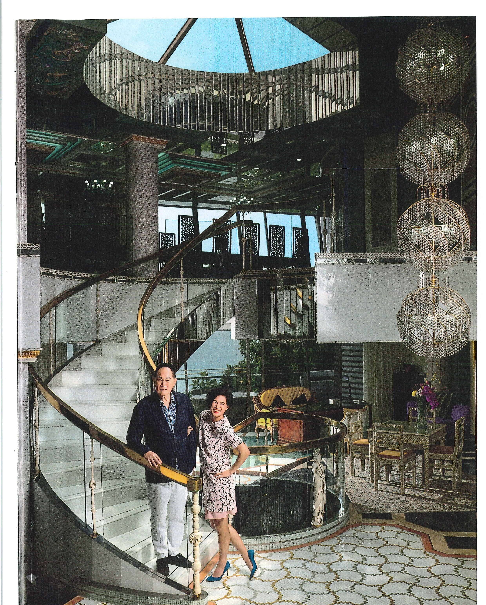

关系复杂 —— 赵世曾与赵式芝的福布斯专访
那是一个星期一的下午，地产大亨赵世曾和他的女儿赵式芝正在他们位于香港中环广场49楼的总部里，埋头审阅建筑图纸，身后是维多利亚港的壮丽全景。这对卓能集团的主席与副主席正忙于中国大陆、香港、澳门及马来西亚的一系列大型住宅与商业项目。
他们的职业关系背后隐藏着丰富的故事。四年前，赵世曾曾以6500万美元的全球悬赏，征求能说服女儿出嫁的男士，而当时赵式芝已与同性伴侣成婚。约有一万名男士应征。2014年初，媒体头条再次爆发——他将赏金翻倍，而赵式芝则以一封致父亲的公开信回应，请求接纳与尊重。
回首往事，现年80岁的赵世曾解释，他提出这一悬赏是想给女儿更多男性选择，因为他认为女儿一直难以找到合适的男朋友。37岁的赵式芝拒绝了这一想法后，他接受了女儿的决定。「这是她的人生，」他让步道，「她的私生活由她自己做主。」
就赵式芝而言，作为一名虔诚的基督徒，她显然深爱并尊敬自己的父亲，相信他的初衷是出于爱，而非恶意。「这既是悲剧也是喜剧，」她说，「把如此私人的事情公之于众，成为茶余饭后的笑柄。」她表示，这段经历帮助她培养了「谦卑、耐心与品格」，也增强了她的宽恕之心。
尽管如此，她仍厌倦谈论这个话题——即便到了今天，仍会收到不请自来的邮件。「我厌倦了那些男人试图引诱我的随机消息，」她说，「这已经成为网络诈骗的引擎，有人冒充我或我父亲，声称在国外被困，需要『紧急资金』，或者打着某种『有利可图的交易』的旗号。」
如此巨大的压力下，大多数父女关系恐怕早已破裂，但赵氏父女没有。2014年10月，赵世曾任命长女赵式芝——他的三个孩子中最年长的一位，同时也是一位建筑师——为公司继承人。
在卓能集团的新总部——该公司去年以超过一亿美元的价格出售了附近的卓能广场——父女俩保持着频繁的沟通，主要用粤语交流。赵世曾身穿白色短袖衬衫，前胸口袋里放着一部金色 iPhone，端坐在他那富丽堂皇的办公室尽头。那里有一台交易终端，用于管理他的私人投资，还陈列着中国与欧洲古典艺术品及古董，包括他母亲的镶花意大利大理石桌和六把蓝色软包椅。
就在外面，在赵世曾秘书与三人设计团队之间的开放空间里，赵式芝站在一张高脚桌前。她的黑色背心印有「相信愛」的标志——这是她于2008年创办的相信愛基金，旨在帮助经济困难的青少年与长者。墙上挂着色彩鲜艳的当代版画，以及她受聘于香港航空青年团的委任状。书籍、文件夹和堆叠的文件触手可及，而她正在攻读的法律学位课程笔记就贴在窗户上。

「既是悲剧也是喜剧」：赵世曾与赵式芝在香港 Happy Lodge——赵世曾那栋16000平方英尺的豪宅
「骨子里的社会主义者」
「我有一个梦想：每年我要送20个孩子上大学。」
一天中的工作时间永远不足以满足她父亲的要求，但赵式芝确实珍惜她的闲暇时光。这个星期六，她在九龙香港飞行会——她在那里学会了驾驶直升机和轻型飞机。她和妻子 Sean Eav（在亚商控股 Asia Commercial Holdings 工作，这是一家上市的家族式高端手表零售商）正在为他们的约克夏梗犬 Bubbles 和 Bordeaux 举办泳池派对，气温已超过35°C。还有几只狗和它们的主人受邀前来。
在喧闹中稍作休息，赵式芝谈起了她的「相信愛基金」。「这让我的一天更有意义，与我们帮助到的年轻人建立联系，」她说，并指出大多数受助者来自内地。「这是一种改变生命的神奇体验。」基金会在卓能总部设有一名带薪员工管理事务。资金来源于赵式芝的薪水、朋友的捐款，以及偶尔来自父亲的一笔馈赠。基金会与一家儿童之家合作，提供学业辅导和课外活动，比如篮球训练营。「我有一个梦想，一个非常遥远的梦想，」赵式芝说，「每年我要送20个孩子上大学，那些掉队的孩子们。」
赵式芝还活跃于香港的多元共融社群，是多个倡导组织的创始成员。她经常向企业多元共融分会发表演讲，并协助组织「Pink Dot Hong Kong」——一年一度的多元共融集会，于每年9月下旬举行，今年已是第三届。
周日早晨，赵式芝和 Sean 会前往中环绿树成荫的一隅，参加圣约翰大教堂的礼拜。「她骨子里是个社会主义者，」教堂名誉牧师 John Chynchen 说。他是赵式芝慈善董事会的成员，也是她的密友。「她有一颗关心弱势群体的心——那些需要帮助的人。」——J.A.P.
不同的工作空间凸显了这对父女鲜明的个性对比。赵世曾牢牢掌控着公司的舵轮，短期内无意退休。他自称花花公子，思维东方化，家长式作风，爱夸耀，无神论者。他从未结婚：他的孩子们来自三位不同的女性，他自豪地声称迄今已「约会」过约一万人。
赵式芝则感觉更西方化，说话带着美式口音——6岁时随继父和母亲（前香港电影演员 Kelly Yao Wei）移居新泽西后养成的。她是一名积极的圣公会信徒，致力于帮助他人，对父亲毕恭毕敬，说话温和，谦逊——并且自2012年起与妻子 Sean Eav 幸福地已婚。「很小的时候我就成为了基督徒，」她说，讲述她如何在12岁时收到灵性召唤，促使她研究佛教与基督教。在英国曼彻斯特大学期间，她曾为全球基督教组织 World Vision 在马拉维做志愿者。「我是个自由派的基督徒，也是同性恋。我在一个复杂的环境中长大。」
赵式芝带领参观了公司总部，在「One Kowloon Peak / 第一期」的水蓝色展板前驻足。卓能集团支付了溢价，将这个位于荃湾新界的前政府员工宿舍地块改建为一栋19层的住宅楼，全部49个单位都享有海景。其中15个单位标有红点表示已售出；其余出租。居民将于明年初开始入住。
上市公司卓能集团是一家中型开发商，市值3.9亿美元，但赵世曾认为这一估值被严重低估，因为他相信公司资产价值15亿美元。他持有71%的股份。截至2014年6月的财政年度，净利润达到5100万美元的近期高点，随后在2015财年降至3100万美元。他预计2016财年（将于9月28日公布）的业绩将优于去年。
赵世曾最初是一名建筑师，后来成为开发商，至今仍亲手绘制新开发项目的主要图纸。在专注香港市场数十年后，过去两年他一直在那里出售房地产。「香港的房地产已经到了顶峰，」他说，表达对城市政治反叛者（他将2014年的雨伞革命称为「可怕」）以及他认为相较于新加坡急剧下滑的失望。「生意还会继续，我们仍然可以获得合理的利润，但已不像从前那样辉煌。」
这天早上，赵式芝照例每周巡查「One Kowloon Peak / 第二期」——五栋带私人泳池的豪华别墅及一座会所，这是卓能集团在香港仍在进行的最后几个项目之一。「我接受爸爸的指令并执行，」她说，「我是他的左膀右臂。有人可能会说他事无巨细地管理，但他对生意的所有细节都了如指掌。」
赵式芝承认自己还有很多东西要学。这是她在卓能集团的第二段任期——她说2004年父亲曾因她花太多时间在外从事公关和零售品牌营销而将她解雇。她于2011年应父亲的要求回到卓能。「爸爸和我的关系有一种很独特的动态，」她说，指出他总是催促她工作更长时间、更努力。「他的风格是老派的，在房地产业确实有效。无论好坏，什么都不会动摇我们。但爸爸的风格缺乏创新，从管理角度来看很有挑战性。我做了很多人力资源管理方面的工作。因为我受过公关培训，所以我天生擅长这个。」
赵式芝的两个同父异母弟弟
赵世曾还有两个儿子。2014年，32岁的 Howard Chao 辞去了卓能集团执行董事的职务（仍保留非执行董事职位），创办了一家企业 Maximus Engineering，为零售商和开发商提供室内装修服务。他还经营着一家房地产咨询和经纪业务。「是时候继续前进了，」他说，并指出他22岁时就加入了卓能，希望探索其他选择，包括本地政治。他曾考虑以亲中阵营成员身份参加9月的区议会选举，但最终决定等待，「积累更多经验」。「我会把门敞开，」他说，暗示下次可能会参选。
与此同时，23岁的 Roman Chao 正在香港城市大学学习商科，计划继续攻读商业发展硕士学位。「将来我会能够帮助父亲，」他说，展望在卓能集团的职业生涯。「我很感激 Howard 和 Gigi 树立的榜样，以及他们给我的个人指导。」——J.A.P.
赵世曾的头脑风暴会议从早上6点在 Happy Lodge 开始——他那栋16000平方英尺的豪宅，坐落于香港岛西岸广阔的 Villa Cecil 公寓开发区内。「我喜欢在床上花两个小时思考，」他说，坐在他家四楼那张36人座餐桌的尽头。「我们正试图在投资上更加谨慎，以便在我任期的最后阶段不会留下任何债务。最好的还在后头。」
目前他的目光投向内地，那里占公司资产的70%，而澳门和马来西亚的项目则等待政府批准。「未来三年随着项目完工，会有大量资金流入，」他说，估计数额为10亿美元。在家中，他戴着标志性的金色染色眼镜，穿着黑白丝印衬衫和莱茵石纽扣，谈论着他的两个大型中国项目，目前售出25%。在杭州——9月举办了G20峰会，也是阿里巴巴的总部所在地——他正在完成一个14街区的社区。在深圳，一个拥有1,089个单位的夏威夷主题社区的建设已接近完工，赵世曾称之为「中国乃至全球增长最快的房地产市场」。
赵世曾每周派赵式芝去内地两天检查项目。但他对进展已很有把握——他在现场有五到十名「女朋友」员工。「她们聪明、漂亮，日夜给我发送信息，」他解释道。被问及这些是否是他薪酬名单上的情妇时，赵世曾不置可否。赵式芝说她不知道，因为「他有他自己的安排」。
对她和她的同事来说，这种非传统的「女朋友」网络在中国开展业务时早期曾令人不适。「很多员工抗议，」赵式芝说，「但如果你超越了办公室政治，它自有其作用。」在中国做生意充满挑战，法治不稳定，障碍重重，而这些内地女朋友及其亲戚——以及她们的人脉——可以疏通流程。「我摘下我的西方头盔，发现这很聪明，他在做什么，」她说。「他从她们那里得到最好的情报，几乎就像詹姆斯·邦德。」
从房子俯瞰东龙洲航道的外部露台——他经常在那里游泳——赵世曾快速回顾了家族历史。他的父母是20出头结婚的法律系学生，抚养五个孩子，经济拮据，直到他的父亲在二战后不久谋得一个买办职位，效力于烟草公司 Philip Morris。随后在1948年，随着中国内战加剧，他的父亲 Chao Tsong Yea 变卖资产，买下一艘船，举家迁往香港。他创办了华光海运 Wah Kwong Maritime Transport，至今仍是香港著名的航运企业。
他的父亲为赵世曾的第一家地产公司出资，但到了1980年代航运业不景气时，「银行对我父亲说：『你必须卖掉地产公司。』」赵世曾最终收购了一家上市空壳公司，并于1988年更名为卓能。「从那以后我们经历了大起大落——很多次我们都以为香港会沉没，」他说，回忆起1997年英国移交前他最严重的担忧。「我买了游艇和直升机。我担心红军会来，我需要一种逃生手段。我当时非常认真。」
赵世曾停顿了一下，压低声音提及他弟弟 George 两天前刚刚去世——George 是华光的前任主席，也是 Wah Kwong 的前任主席。「我是第三个儿子，」赵世曾低头说。「现在只剩我了。」
走下他那宏伟的旋梯，来到三楼摆满中国艺术品的前厅，赵世曾提供了更多关于他自己接班计划的细节：「每天我都在传授我的经验。每年我传授10%。但我不知道我什么时候会把指挥棒交出去。这将取决于赵式芝的表现，取决于她有多努力。」
「中国人不会完全退休，」他继续道。「如果我不工作，我就失去了乐趣。如果我退休，我每天都在等死。那没意思。」